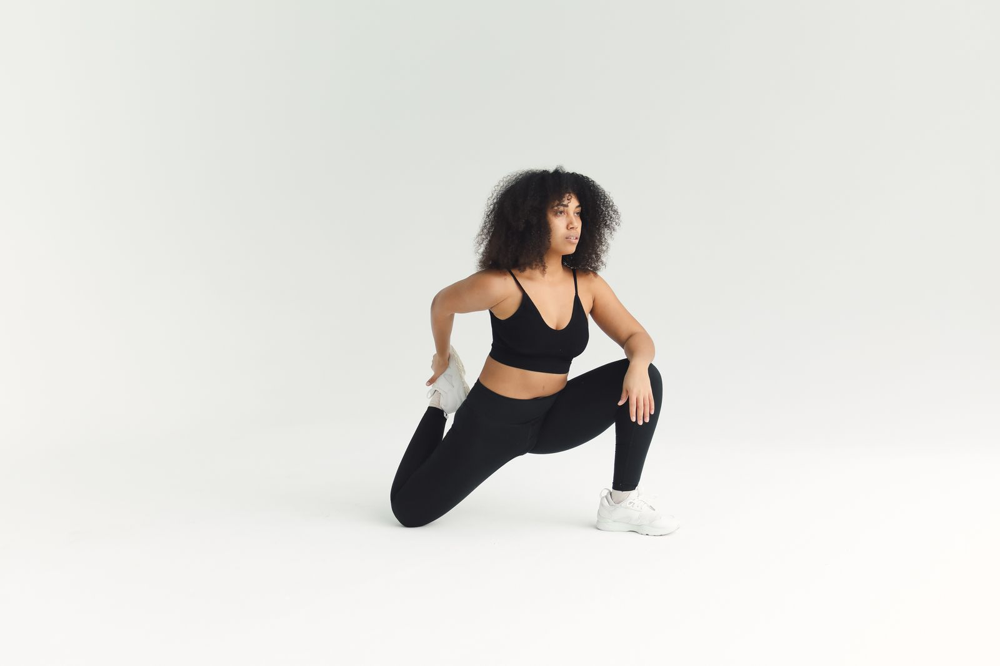
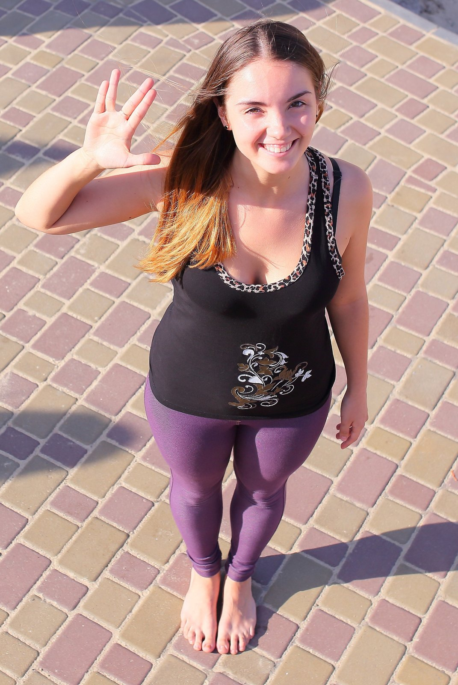
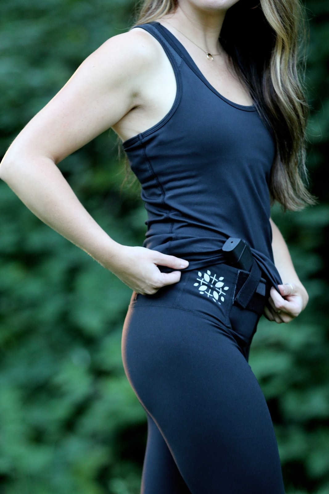
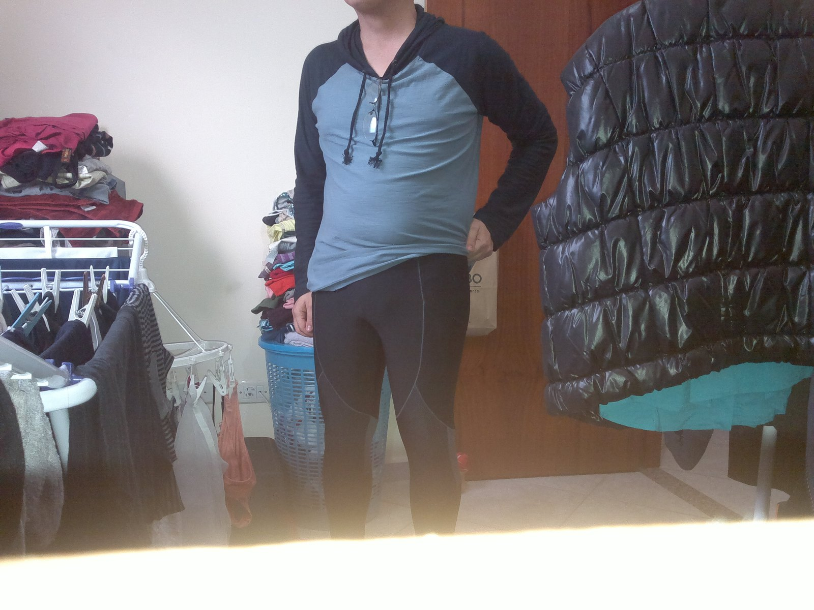

GSM
Чем выше масса ткани, тем обычно плотнее материал. Но одинаковый GSM у разных составов может вести себя по разному.
Смежная энциклопедия
Разбираемся, где заканчиваются колготки и начинаются легинсы, спортивные тайтсы и меггинсы. Почему DEN здесь часто бесполезен и на что смотреть вместо него.

Фото: Polina Tankilevitch / Pexels · Лицензия
Таксономия
Название в магазине может быть неточным. Надёжнее смотреть на конструкцию, стопу, ткань и назначение.
| Категория | Конструкция | Главный параметр | Типичная задача | Не путать |
|---|---|---|---|---|
| Колготки | От талии до пальцев, со стопой | DEN, крой, состав | Мода, тепло, сцена, компрессия | Не любая облегающая вещь является колготками |
| Легинсы | Обычно без стопы, до щиколотки | Посадка, GSM, прозрачность | Повседневная одежда, дом, спорт | DEN часто неприменим |
| Спортивные тайтсы | Функциональный крой без стопы | Влагоотведение, растяжение, швы | Бег, зал, йога | Не обещают защиту от травм сами по себе |
| Меггинсы | Мужская или унисекс подача легинсов | Анатомия, размер, ткань | Спорт и городской стиль | Это не обязательно колготки со стопой |
| Чулки | Заканчиваются на ноге без талии | Верхний край, крепление, DEN | Мода, сцена, исторический костюм | Не имеют встроенной верхней части колготок |
Материал и плотность
GSM показывает массу ткани в граммах на квадратный метр. Он помогает оценить плотность легинсов, но не заменяет проверку растяжения и прозрачности.
Чем выше масса ткани, тем обычно плотнее материал. Но одинаковый GSM у разных составов может вести себя по разному.
При сильном растяжении полотно может светлеть и просвечивать. Проверка должна учитывать ваш размер и движение.
Для спорта важны скорость высыхания и отведение влаги. Хлопок приятен, но сохнет медленнее технических составов.
Пояс, клинья и плоские швы влияют на движение. Слишком маленький размер увеличивает растяжение и прозрачность.
Реальные фотографии
Фотографии показывают видимую конструкцию и сценарий. Мы не присваиваем снимкам неподтверждённые составы или бренды.



Практический выбор
Выбор начинается с обуви, движения, температуры и желаемого внешнего вида.
Колготки со стопой создают непрерывную линию и подходят к закрытой обуви. Для открытой смотрите невидимый или открытый мысок.
Спортивные тайтсы без стопы удобны с кроссовками и носками. Оценивайте влагоотведение, швы и посадку при движении.
Легинсы работают как самостоятельные брюки. Выбирайте нужную непрозрачность и длину верха.
Под брюки можно выбрать тонкий слой со стопой или без неё. Важны температура, обувь и отсутствие лишних складок.
Бизнес смежной категории
История Сары Блейкли показывает, как идея из чулочной категории переросла в бельё, легинсы и одежду. Это пример расширения через решение смежных проблем посадки, а не через случайное добавление товаров.
Читать бизнес-кейс Spanx